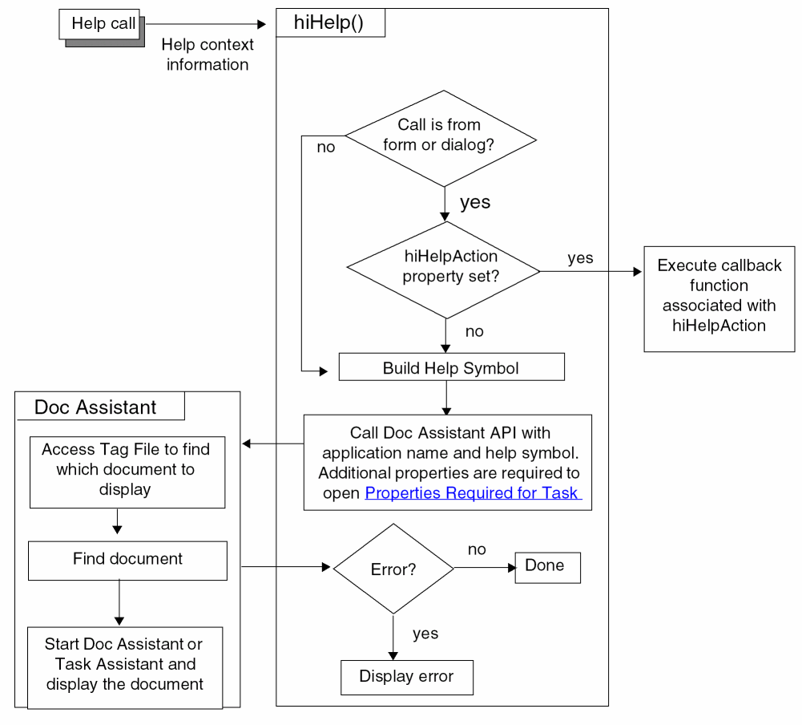

15
Online Help Mechanism
This chapter provides information about the online help mechanism and describes the following topics:
The online help mechanism described in this chapter handles help requests from applications integrated into the Virtuoso environment.
- Clicking a Help button on a form, dialog box, or window.
-
Selecting a form field or menu item and pressing the
Helpkey on your keyboard (or theF1key, if your keyboard does not have aHelpkey).
Virtuoso responds to your help request by sending contextual information to the help service function, hiHelp(). hiHelp() uses this information to do one of the following:
-
Display online help information in Doc Assistant using tag files (
.tgffiles) and the Doc Assistant Application Programming Interface (API).
Doc Assistant is the Cadence online documentation system, which displays HTML pages. Task Assistant is a quick-help interface that is used to display task- or feature-specific help. Task Assistant is integrated with Doc Assistant. - Execute the callback function associated with the help request, if any.
As a user interface developer, you can control the contextual information that is sent to hiHelp() in the following ways:
-
By specifying the help argument when you create a form with
hiCreateAppForm(), a dialog box withhiDisplayAppDBox(), or a window withhiCreateWindow()orhiDisplayWindow(). -
By setting the
hiHelpAppNameandhiHelpSymNameproperties. - By setting the Properties Required for Task Assistant.
-
By setting the
hiHelpActionproperty on a form or dialog box, or specifying a custom help menu item for a window, and providing your own callback function (if you do not want to use.tgffiles and Doc Assistant).
The following diagram illustrates how the help system works.

Cadence no longer supports help response files (
.HRF files) and recommends that you convert your old .HRF files to .tgf files.Related Topics
Specify Your Own Callback for Help
Return to top